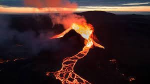
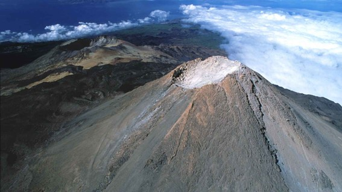
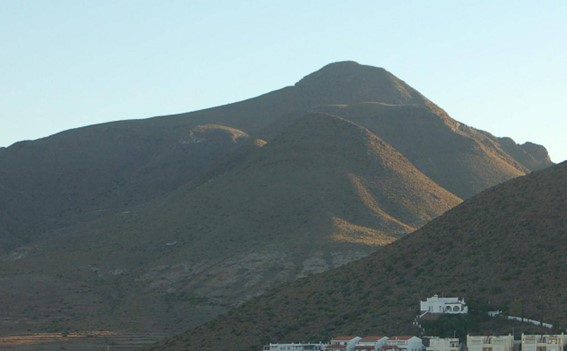

Volcanes activos
Los volcanes activos son aquellos que pueden entrar en actividad
eruptiva en cualquier momento, es decir, que permanecen en estado de
latencia. Esto ocurre con la mayoría de los volcanes, pues
ocasionalmente entran en actividad, permaneciendo en reposo la mayor
parte del tiempo. El período de actividad eruptiva puede durar desde
una hora hasta varios años, como fue el caso del volcán de Pacaya y
del Irazú. A día de hoy, no se ha descubierto ningún método seguro
para predecir las erupciones.

Volcan activo CumbreVieja | La Palma, Canarias, España
Volcanes durmientes o inactivos
Los volcanes durmientes o inactivos son aquellos que mantienen ciertos
signos de actividad, como la presencia de aguas termales, y han
entrado en actividad esporádicamente. Dentro de esta categoría suelen
incluirse las fumarolas y los volcanes con largos períodos de
inactividad entre una erupción y otra. Un volcán se considera
durmiente si desde hace siglos no ha tenido una erupción.

Volcan durmiente Teide | Tenerife, Canarias, España
Volcanes extintos
Los volcanes extintos son aquellos cuya última erupción fue registrada
hace más de 25 000 años. Sin embargo, no se descarta la posibilidad de
que puedan despertar y liberar una erupción más fuerte que la de un
volcán que está activo, causando grandes desastres. También se les
llama extintos porque fueron alejados de su fuente de magma, perdiendo
poco a poco su actividad, esto sucede únicamente en volcanes de punto
caliente, a diferencia de los volcanes de zonas de subducción.

Volcan extinto Cabo de Gata | Almería, España